Strandnachmittag: Sonnenschirm, Plastikstühle, Caipirinha-Verkäufer im Minutentakt. Am Ende des Strandes spielen Einheimische Fußball und Futevôlei vor dem Morro do Leme.
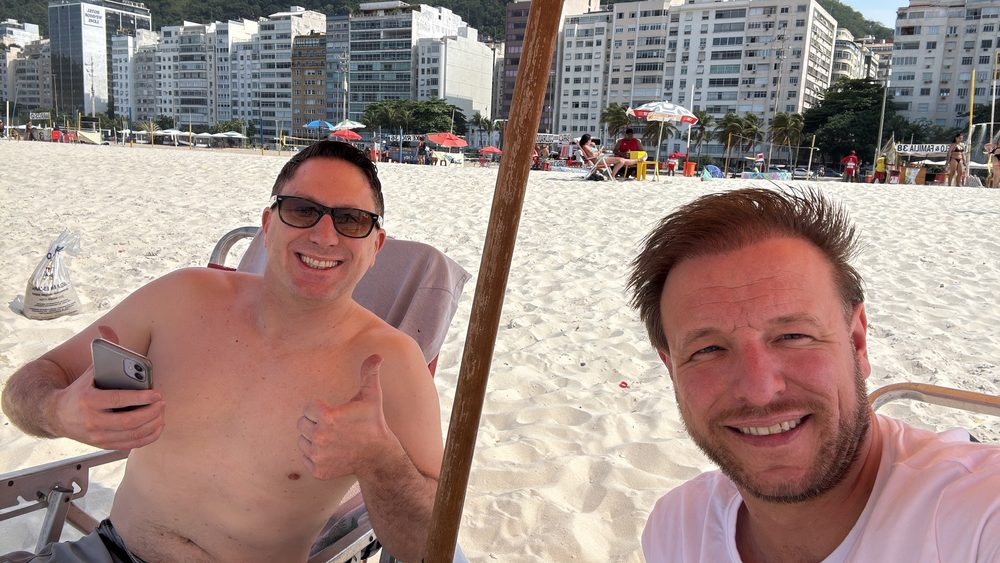
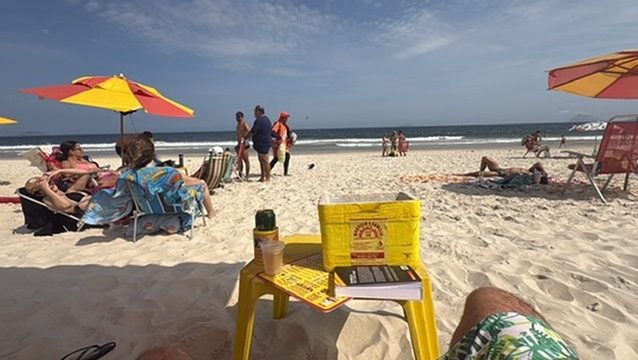
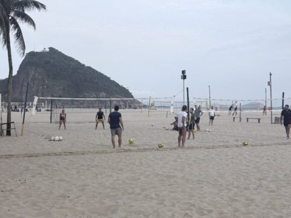
Lapa: Abends ins Ausgehviertel Lapa. Die weißen Bögen des Aquädukts, fertiggestellt 1750, trugen einst Wasser in die Stadt – seit 1896 fährt die Straßenbahn nach Santa Teresa darüber. Abendessen beim Peruaner: Ceviche und Pisco.
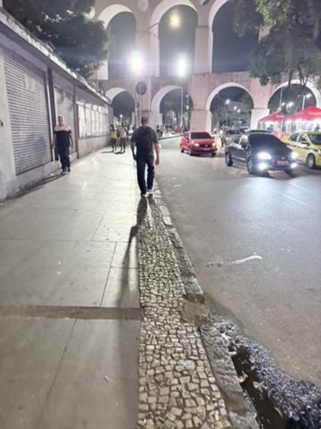
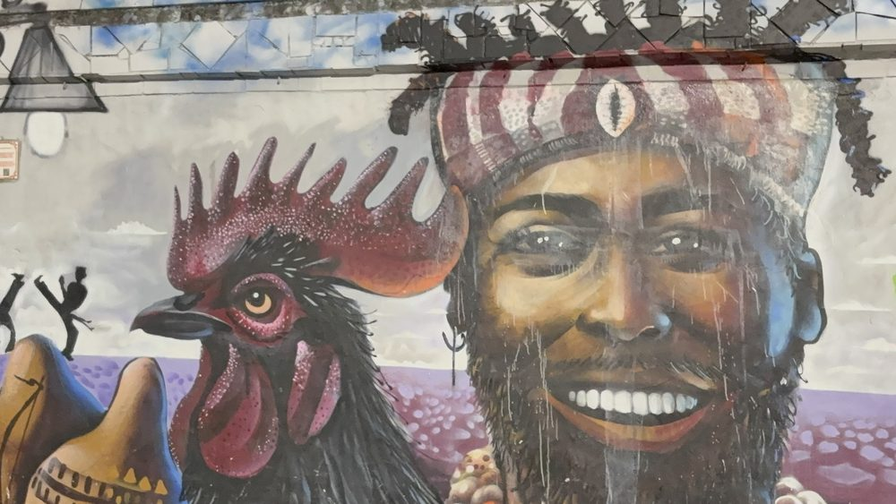
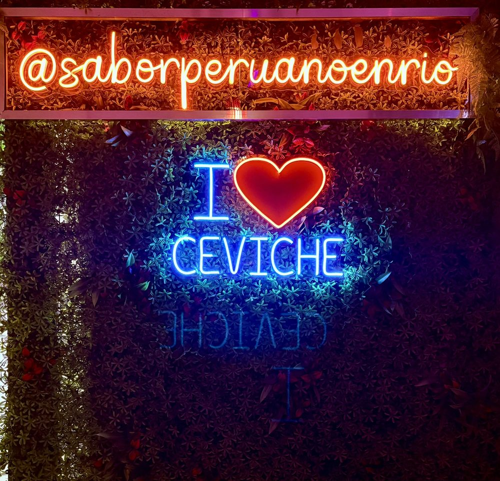
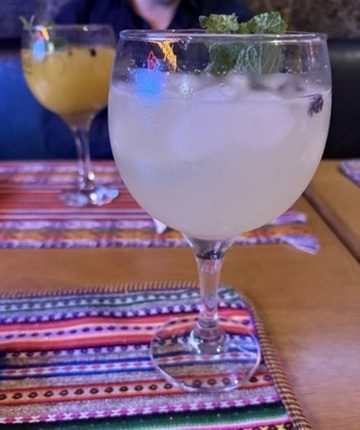
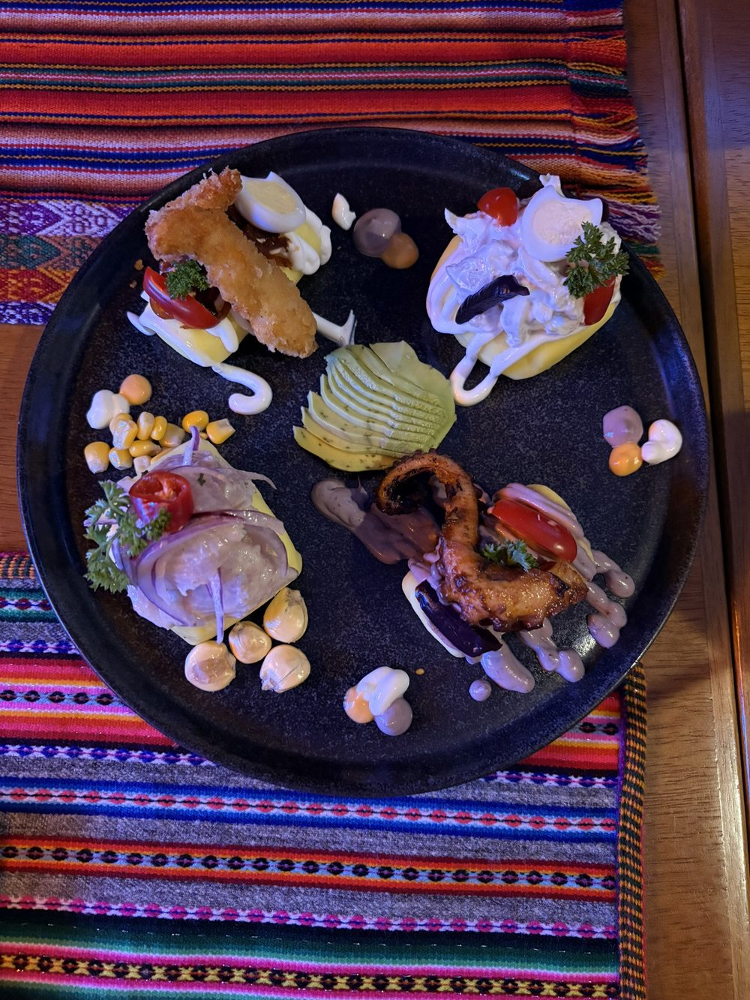
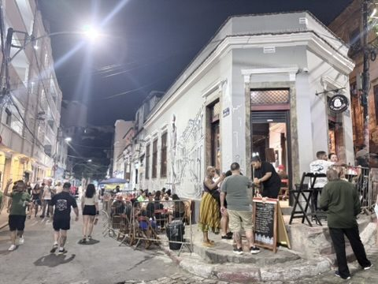
Escadaria Selarón: Die 215 Stufen zwischen Lapa und Santa Teresa verwandelte der chilenische Künstler Jorge Selarón ab 1990 in ein Mosaik aus über 2.000 Fliesen aus mehr als 60 Ländern – viele davon Geschenke von Besuchern. Er arbeitete bis zu seinem Tod 2013 daran.
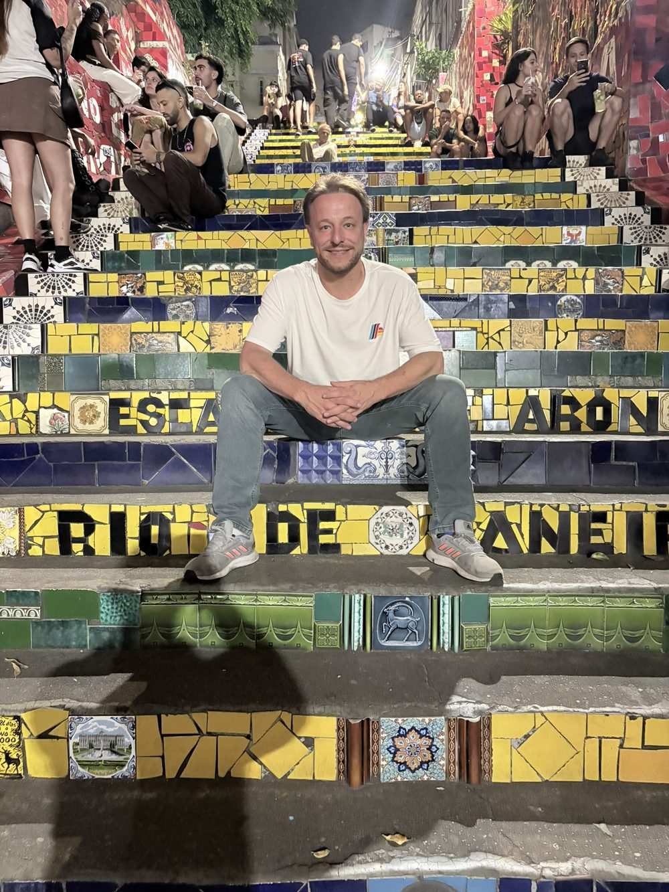
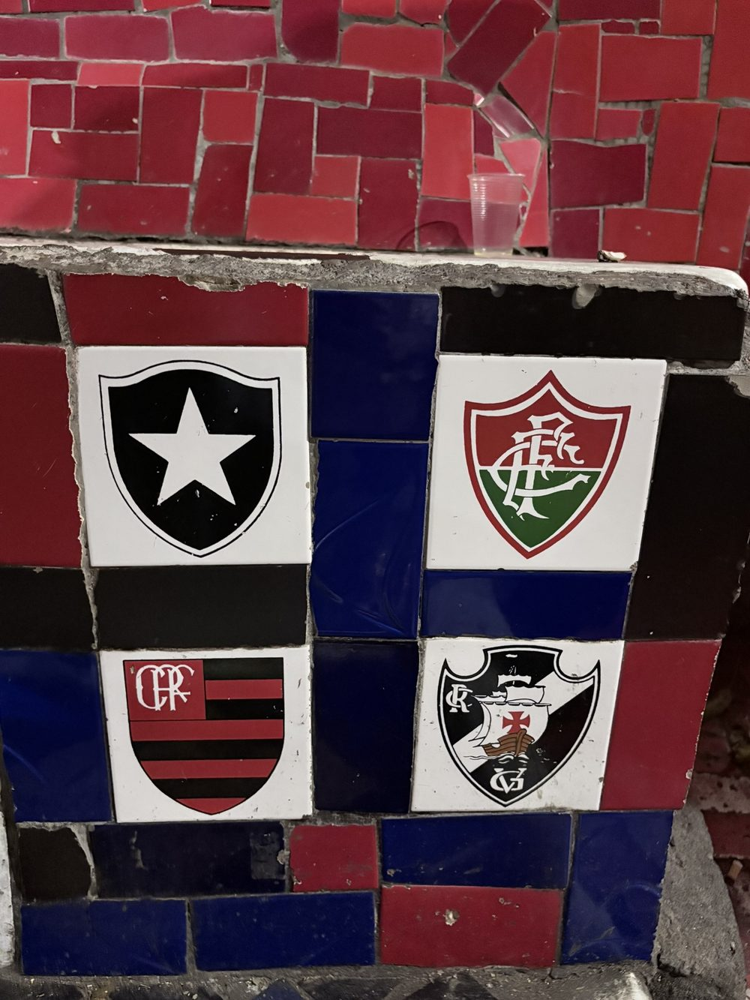
Die vier großen Clubs Rios auf einer Fliese: Botafogo, Fluminense, Flamengo, Vasco.
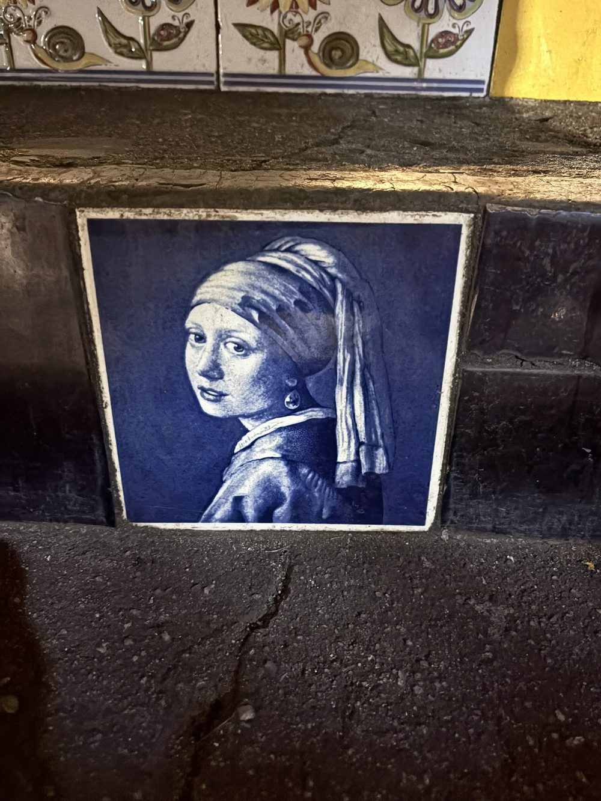

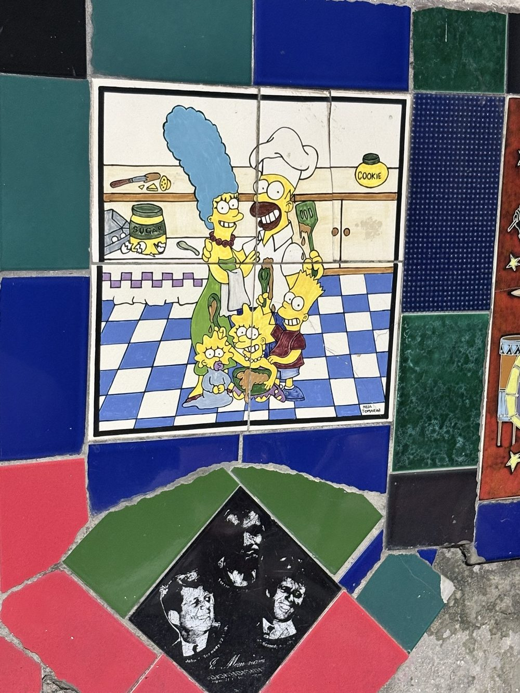
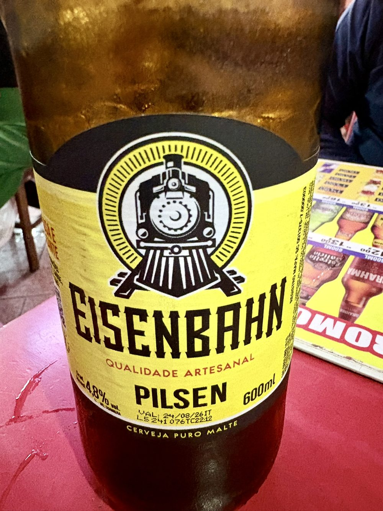
Zum Abschluss ein Eisenbahn – Craft-Bier, 2002 in Blumenau gegründet, der deutschesten Stadt Brasiliens.